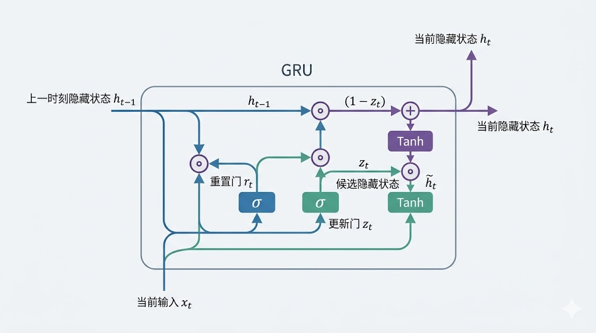
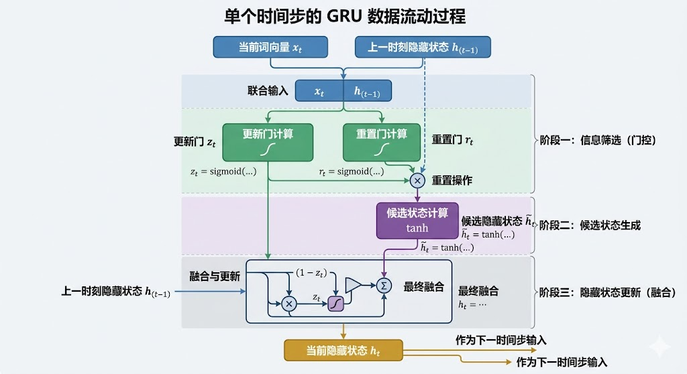
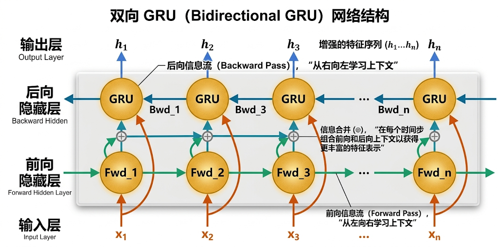
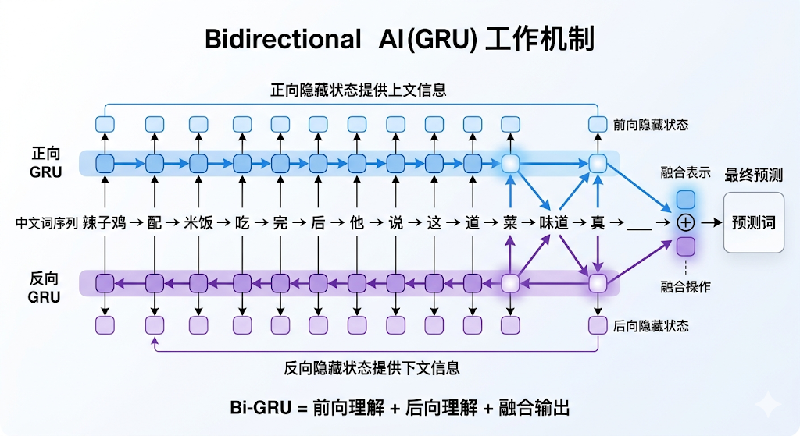

"信息是不确定性，是出人意料，是困难程度，是熵。"--现代信息论之父香农
LSTM通过门控机制（输入门、遗忘门、输出门）和细胞状态（Cell State）的设计，有效缓解了传统RNN的梯度消失问题。细胞状态通过线性更新（如遗忘门控制历史信息的保留比例），让信息能够在较长序列中更稳定地传递，从而在一定程度上减轻梯度在长序列中的指数级衰减或爆炸。
但LSTM的门控机制，也带来了弊端。首先是结构相对更复杂，如单层LSTM参数量通常会明显高于传统RNN，训练时间和内存消耗也会随之增加。
其次是其时间步的设计，每一步的生成必须等待上一步的完成，这种依赖性限制了硬件并行加速能力。也就是说，即便GPU很强，LSTM这类按时间步推进的结构，也很难像后来的Transformer那样把序列中的大量位置同时并行处理。
最后是超长序列处理不足的问题。尽管LSTM设计初衷是解决长期依赖，但在极端长序列任务中，仍可能出现信息逐步稀释、远距离依赖难以稳定保留的情况。也正因为如此，研究者一直在尝试设计更轻量、更高效，同时又能尽量保留长期信息的序列模型。
为了缓解LSTM存在的上述弊端，Kyunghyun Cho等人在2014年发表了论文《Learning Phrase Representationsusing RNN Encoder-Decoder for Statistical Machine Translation》，在这篇论文中，针对LSTM进行了改进和简化。
LSTM有三个门控，输入门、遗忘门、输出门和一个独立的细胞状态（Cell State），而GRU通过合并门控功能大幅简化结构：

然后接下来我们先对这幅图中的门和隐藏状态进行分析：
更新门可以理解为把"保留旧信息"和"吸收新信息"这两件事，放到一个门里统一控制。它既参与决定上一时刻隐藏状态中有多少内容要继续保留，也参与决定当前输入带来的新信息要融入多少。
比如，在分析"今天天气很好，适合跑步"时，更新门可能保留"天气"信息，同时加入"跑步"相关的新内容。计算公式如下：
$$ z_t = \sigma(W_z \cdot [x_t; h_{t-1}] + b_z) $$注释版：
$$ z_t = Sigmod(更新门权重·[当前时刻输入;上一时刻隐藏状态] + 更新门权重偏置) $$$z_t$ 越接近1，越保留 $h_{t-1}$ 的旧记忆；越接近0，越融入当前 $x_t$ 的新信息。
重置门的作用，不是简单"替代某一个门"，而是控制在生成当前候选信息时，旧记忆到底要参与多少。
比如在分析"跑步"时，重置门可能忽略"天气"的部分细节，聚焦运动相关上下文。计算公式如下：
$$ r_t = \sigma(W_r \cdot [x_t; h_{t-1}] + b_r)。 $$注释版：
$$ r_t = Sigmod(重置门权重·[当前时刻输入;上一时刻隐藏状态] + 重置门权重偏置) $$$r_t$ 越接近1时，越利用 $h_{t-1}$ 的旧记忆生成新信息；越接近0，越"重置"旧记忆，仅用 $x_t$ 生成新信息。
LSTM需要维护独立的细胞状态（长期记忆）和隐藏状态（短期记忆），而GRU不再单独维护一条细胞状态通路，而是通过隐藏状态直接传递和更新信息。这样做带来了两个好处：
其一是计算更高效，隐藏状态既是输出，也是下一时间步的输入，整体结构更紧凑，参数量通常也比LSTM更少。
其二是梯度传播更稳定，GRU通过线性叠加的更新方式（$h_t = z_t * h_{t-1} + (1-z_t) * 候选状态$）降低了梯度消失风险。
候选隐藏状态的作用是基于重置门"筛选后的旧记忆"和"当前输入"，生成待融合的新信息。
先通过 $r_t \otimes h_{t-1}$ 筛选旧记忆，再与 $x_t$ 拼接，经 $\tanh$ 压缩范围，得到候选新记忆。计算公式如下：
$$ \tilde{h}_t = \tanh(W_h \cdot [x_t; (r_t \otimes h_{t-1})] + b_h)。 $$基于"筛选后的旧记忆"和"当前输入"，生成待融合的新信息。计算公式如下：
$$ h_t = (z_t \otimes h_{t-1}) \oplus ((1 - z_t) \otimes \tilde{h}_t)。 $$又写作：
$$ h_t = z_t \cdot h_{t-1} + (1 - z_t) \cdot \tilde{h}_t $$解读：$z_t \otimes h_{t-1}$ 是"保留的旧记忆"，$(1-z_t) \otimes \tilde{h}_t$ 是"融入的新信息"，两者点加得到最终状态，实现了既存旧、又纳新的目的。
由于GRU仅需维护2个门控（LSTM为3个），参数量减少约30%，训练速度提高20%-30%。 取消独立记忆单元后，GRU隐藏状态的更新公式更简洁，，因此在不少任务中，GRU往往会比LSTM跑得更快一些。
GRU的门控计算步骤更少带来的另一个好处，是更适合实时任务，如聊天机器人响应，以及资源受限场景，如手机端应用。特别是在短文本分类任务中，GRU常常能用更紧凑的结构取得不错的效果，训练速度比LSTM快30%以上。
经过以上三方面的改进，GRU证明了门控机制的有效性并不一定依赖非常复杂的结构；同时，GRU也推动了编码器-解码器这类序列建模思路的普及，为后续更复杂的序列模型，如Transformer发展提供了重要经验。
以之前的"辣子鸡配米饭吃完后他说这道菜味道真？"为例，聚焦GRU的核心处理流程：
步骤1：输入拼接
当前输入 $x_t$（如"辣子鸡"的词向量）与上一时刻隐藏状态 $h_{t-1}$（初始为全0向量）拼接，得到 $[x_t; h_{t-1}]$（作为所有门的统一输入）。
步骤2：计算两个门控系数
（1）更新门：$z_t = \sigma(W_z \cdot [x_t; h_{t-1}] + b_z)$（如"辣子鸡"时刻 $z_1=0.1$，倾向融入新信息）；
（2）重置门：$r_t = \sigma(W_r \cdot [x_t; h_{t-1}] + b_r)$（如"辣子鸡"时刻 $r_1$=0.95，倾向利用旧记忆框架）。
步骤3：生成候选隐藏状态
$\tilde{h}_t = \tanh(W_h \cdot [x_t; (r_t \otimes h_{t-1})] + b_h)$（如"辣子鸡"时刻，$r_1 \otimes h_0=0，\tilde{h}_1$ 直接承载"辣"的语义）。
步骤4：更新最终隐藏状态
$h_t = (z_t \otimes h_{t-1}) \oplus ((1 - z_t) \otimes \tilde{h}_t)$（如"辣子鸡"时刻 $h_1 \approx \tilde{h}_1$ ，完全保留"辣"的记忆；"米饭"时刻 $z_t=0.98，h_t \approx h_{t-1}$ ，保留旧记忆）。
数据流总结（流程链）
$$ [x_t; h_{t-1}] \rightarrow \begin{cases} z_t = \sigma(W_z \cdot [x_t; h_{t-1}] + b_z) \\ r_t = \sigma(W_r \cdot [x_t; h_{t-1}] + b_r) \end{cases} \rightarrow \tilde{h}_t = \tanh(W_h \cdot [x_t; r_t \otimes h_{t-1}] + b_h) \rightarrow h_t = z_t \otimes h_{t-1} \oplus (1-z_t) \otimes \tilde{h}_t $$
GRU相较于LSTM已有大幅改善，但其只能单向处理序列（如从左到右），而双向GRU同时运行正向和反向两个GRU层：
这使得GRU具备了"瞻前顾后的能力"，普通GRU（单向GRU）阅读句子时，就像我们逐字读一句话，从左到右理解信息。而双向GRU会用两个独立的GRU单元，一个从前往后（理解上文），一个从后往前（理解下文）处理序列，然后将这两个方向得到的信息组合起来，从而更全面地把握整个序列的上下文信息。
用一个具体的例子来说明：分析句子 "苹果公司发布了新手机，因其创新的设计获得了市场好评。"。
单向GRU按顺序读到"获得了市场好评"时，可能对原因（"创新的设计"）的记忆已经有所淡化。
而双向GRU在处理"好评"时，可以同时关联到前面的"创新设计"和"新手机"，更清晰地捕捉到"结果-原因"的关系。

双向GRU并不改变GRU单元本身的内部结构（它依然依靠更新门和重置门来控制信息流），而是在模型架构层面进行组织：它具备两个独立的GRU层：一个负责正向处理序列（从序列开头到结尾），另一个负责反向处理序列（从序列结尾到开头）。
对于序列中的每一个位置（如第t个词），双向GRU会得到两个隐藏状态（Hidden State）：
通常将这两个方向的隐藏状态进行拼接组合，形成一个更全面的特征向量，来代表该位置在完整上下文中的信息。后续的网络层（如全连接层）就可以基于这个融合后的特征进行预测或分类。
以之前的句子 "辣子鸡 配 米饭 吃 完 后 他 说 这 道 菜 味道 真 ____"（14个时间步，记为t_1~t_{14}）为例，结构拆解如下：
1、核心组件（3部分）
2、隐藏状态融合方式（3种常用）

以"辣子鸡"句子的 $t_{11}$（输入"味道"，对应 $x_{11}$）和 $t_{14}$（输入"____"，对应 $x_{14}$ ）为例，拆解数据流：
步骤1：输入准备
步骤2：正序GRU处理（左->右）
步骤3：逆序GRU处理（右->左）
步骤4：隐藏状态融合（拼接为例）
关键示例（$t_{14}$，最终预测时刻）：$h_{14} = [\vec{h}_{14}; \overleftarrow{h}_{14}]$，包含两部分信息：
融合后 $h_{14}$："辣子鸡的味道->需填辣味评价词"的完整语义。
步骤5：输出层预测
数据流总结（流程链）：
$$ \text{词向量序列}(x_1\sim x_T) \rightarrow \begin{cases} \text{正序GRU（左->右）} \rightarrow \vec{h}_1\sim \vec{h}_T \\ \text{逆序GRU（右->左）} \rightarrow \overleftarrow{h}_1\sim \overleftarrow{h}_T \end{cases} \rightarrow h_t = [\vec{h}_t; \overleftarrow{h}_t] \, (\text{每个时间步融合}) \rightarrow \text{输出层} \rightarrow \text{任务结果（分类/预测）} $$更新门（Update Gate）：GRU里最核心的"调配阀门"。它决定上一时刻的旧信息要保留多少、当前输入带来的新信息要吸收多少。更新门越接近1，模型越倾向保留旧记忆；越接近0，越倾向接纳新信息。
重置门（Reset Gate）：控制旧记忆在"生成当前候选信息"时参与多少。它不是单纯地删除记忆，而是决定历史信息要不要深度参与当前计算。重置门越小，模型越倾向暂时少参考过去，更多依赖当前输入。
候选隐藏状态（Candidate Hidden State）：可以把它理解成"模型此刻准备写进去的新内容"。它是结合当前输入和经过重置门筛选后的旧记忆生成的，还不算最终结果，而是等待更新门来决定最终保留多少。
最终隐藏状态（Hidden State）：GRU每一步真正传递下去的记忆载体。它由"旧记忆保留部分"和"新信息加入部分"共同组成，所以既不会每一步都全盘推翻过去，也不会死守旧信息不放。
双向GRU（Bidirectional GRU）：普通GRU只能从前往后读序列，双向GRU则会同时从前往后、从后往前各读一遍，再把两个方向的信息合起来。这样模型不仅知道"前面说了什么"，也知道"后面接了什么"，对上下文的理解会更完整。